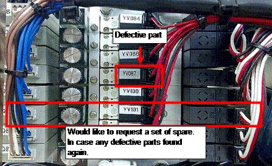

Service History
Subject: NS-8040 Index Arm Air Tubing Air Leakage and Device Floating error at Index Arm
Handler Model: NS-8040(S/N: 181650)
Controller: RC520
Date: 19 Nov 2009
Symptom
1) Air tubing leakage at Index Arm.
2) Slow response at Index vacuum Switch display.
Action
Before change of air tubing the value shown on vacuum switch display is 50.
After change of air tubing and fitting reading get back to normal 90.
But during production the display value will start to decrease from 90 to 50 and caused device floating error at Index Arm.
Was confirm that the Air Supplying Valve(YV087) triggering (vacuum) is slower as per compared with others.
Therefore make a swap with another air supplying valve, problem follow to another arm.

Cause
1) Broken air tubing causing air leakage resulted in Index Vacuum Switch displaying only -50kpa with device.
2) Air Supplying Valve(YV087) triggering is slower causing device floating error at Index Arm.
Index Air Supply valve(for vacuum) R35N800006100 (VQD1251W-5M-X80)
For slow response of vacuum switch display, can try to increase vacuum volume.